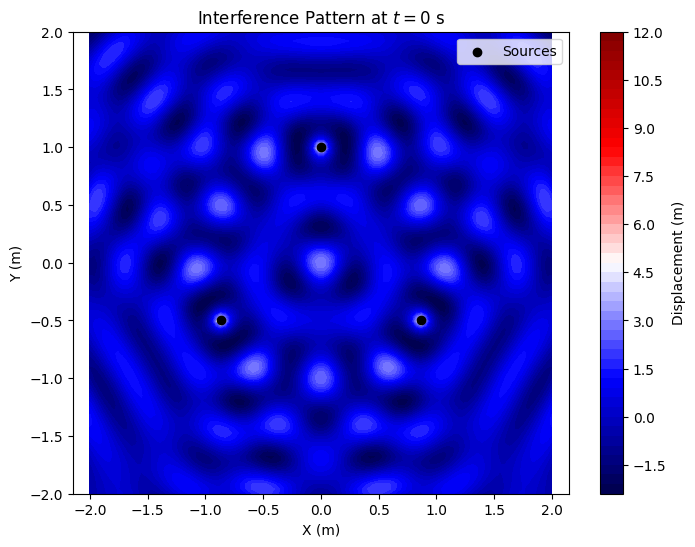
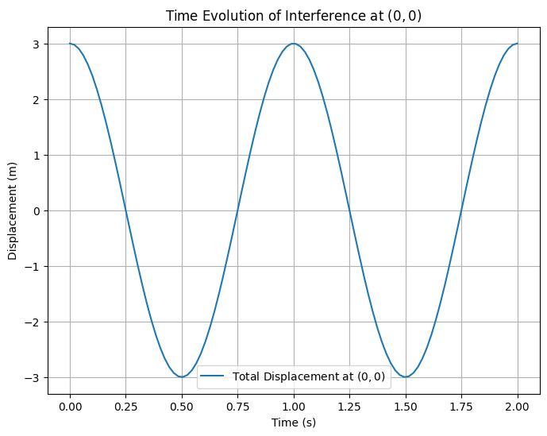

Interference Patterns of Waves on a Water Surface
Motivation
Interference occurs when waves from different sources overlap, creating new patterns on a water surface. Ripples from multiple points form distinctive interference patterns, demonstrating how waves can reinforce (constructive interference) or cancel (destructive interference) each other. This phenomenon provides a visual way to study wave behavior, phase relationships, and the effects of multiple sources. Understanding these patterns is fundamental to wave physics, with applications in acoustics, optics, and fluid dynamics.
Problem Statement
The task is to analyze the interference patterns formed on a water surface due to the superposition of waves emitted from point sources placed at the vertices of a chosen regular polygon. A single wave from a source at \((x_0, y_0)\) is described by:
where:
- \(\eta(x, y, t)\) is the displacement of the water surface at point \((x, y)\) and time \(t\),
- \(A\) is the amplitude,
- \(k = 2\pi / \lambda\) is the wave number, with wavelength \(\lambda\),
- \(\omega = 2\pi f\) is the angular frequency, with frequency \(f\),
- \(r = \sqrt{(x - x_0)^2 + (y - y_0)^2}\) is the distance from the source to \((x, y)\),
- \(\phi\) is the initial phase.
The total displacement from \(N\) sources (vertices of the polygon) is given by the principle of superposition:
We assume all sources emit waves with the same \(A\), \(\lambda\), \(f\), and a constant phase difference (set \(\phi = 0\) for simplicity).
Step-by-Step Analysis
1. Select a Regular Polygon
Let’s choose an equilateral triangle as the regular polygon, with vertices at \((x_i, y_i)\) for \(i = 1, 2, 3\). Place the triangle centered at the origin with side length \(s = 2\) m:
- Vertex 1: \((0, 1)\)
- Vertex 2: \((\sqrt{3}/2, -1/2)\)
- Vertex 3: \((-\sqrt{3}/2, -1/2)\)
2. Position the Sources
The wave sources are placed at these vertices, so \((x_1, y_1) = (0, 1)\), \((x_2, y_2) = (\sqrt{3}/2, -1/2)\), and \((x_3, y_3) = (-\sqrt{3}/2, -1/2)\).
3. Wave Equations
For each source \(i\), the wave equation is:
where \(r_i = \sqrt{(x - x_i)^2 + (y - y_i)^2}\). We set \(A = 1\) m, \(\lambda = 0.5\) m, \(f = 1\) Hz, so:
- \(k = 2\pi / \lambda = 4\pi\) rad/m,
- \(\omega = 2\pi f = 2\pi\) rad/s.
4. Superposition of Waves
The total displacement is:
Interference Patterns Analysis
Constructive and Destructive Interference
- Constructive Interference: Occurs when waves are in phase, i.e., \(|k(r_i - r_j)| = 2n\pi\) for integer \(n\). The path difference \(\Delta r = |r_i - r_j|\) must satisfy:
$$ \Delta r = n \lambda $$
- Destructive Interference: Occurs when waves are out of phase by \(\pi\), i.e., \(|k(r_i - r_j)| = (2n+1)\pi\), so:
$$ \Delta r = (n + 1/2) \lambda $$
For our setup, \(\lambda = 0.5\) m, so constructive interference occurs at \(\Delta r = 0, 0.5, 1, \ldots\) m, and destructive interference at \(\Delta r = 0.25, 0.75, \ldots\) m.
Time Evolution
At a fixed time \(t\), the pattern depends on the spatial variation of \(r_i\). As \(t\) changes, the pattern oscillates with frequency \(f\), creating a dynamic interference field.
Python Scripts and Visualizations

Python Script 2: Time Evolution of Displacement at a Point
